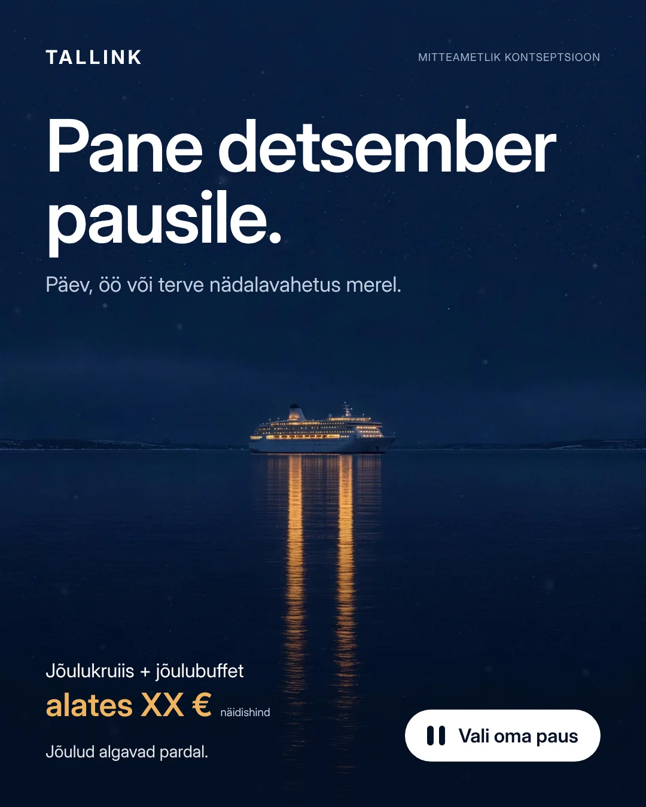
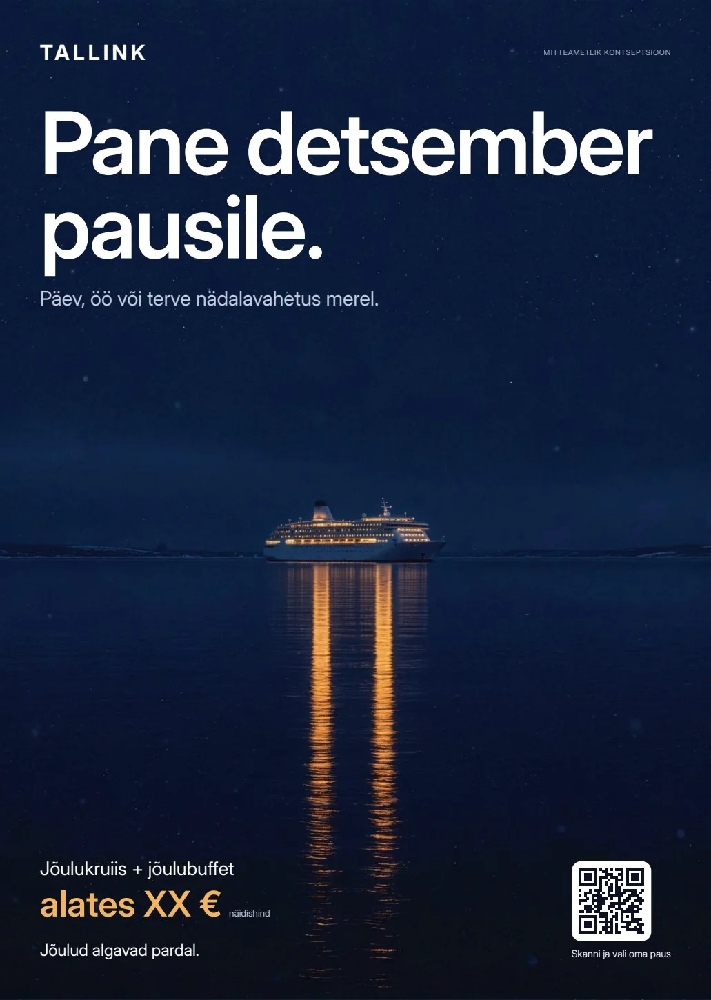
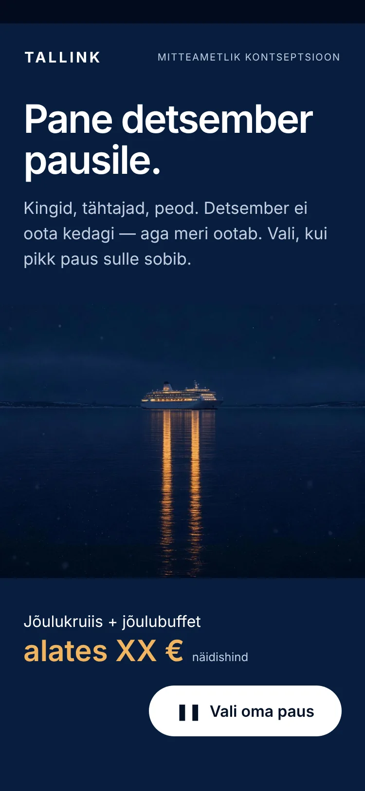
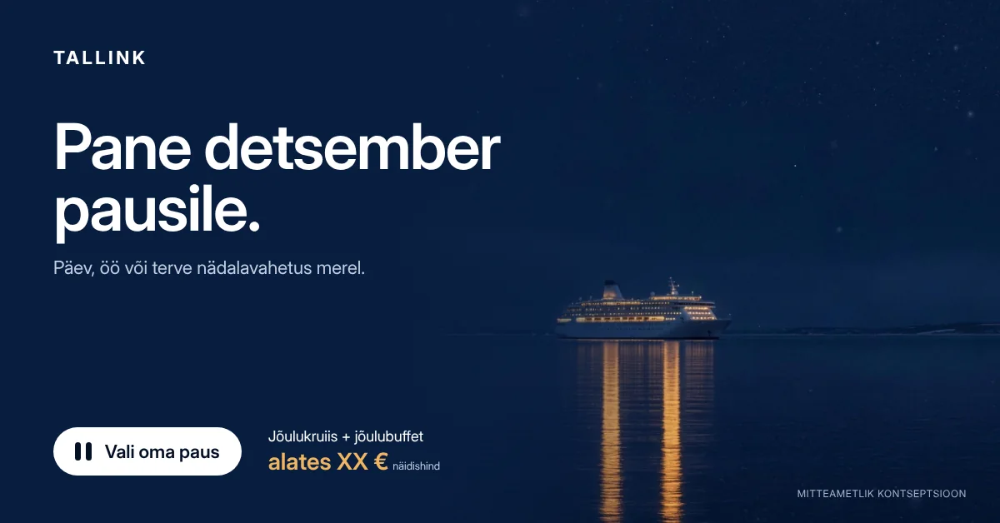

03Pane detsember pausile· Tallink Christmas campaign · unofficial concept
“Can December wait for a day?”
“Pane detsember pausile” (Put December on pause) is a Christmas campaign concept for Tallink. December is gifts, deadlines, parties and traffic. A ferry is the one place where none of it can reach you for a day.
- Role
- Solo: idea, copy in Estonian and English, design, production
- When
- November 2026
- Built with
- HTML, CSS, JavaScript; video, print files and sound generated in code. AI: Claude
- Status
- Independent concept, made as an application piece. Prices and dates are samples

01The idea
The pause sign was already on the water.
A ferry at night throws two tall reflections of light onto the sea. Side by side they read as a pause sign. That one image carries the campaign: the headline, the button (“Vali oma paus”, choose your pause) and the cut in the film all use it.
The offer is sorted by how long a pause you can afford: a day trip to Helsinki, a cruise to Stockholm, or a cruise with a hotel night.
02One idea, every format




03What is in the package
- 1landing page with a booking bar, built for GitHub Pages
- 3film cuts: 15 s vertical, 15 s square, 6 s vertical, with original sound
- 14banners: 7 formats in 2 languages
- 2print files: A3 poster and A5 flyer
“TALLINK” is set as plain text in place of the logo, and all prices and dates are samples. Facts about the current Christmas page were taken from tallink.com on 3 November 2026.